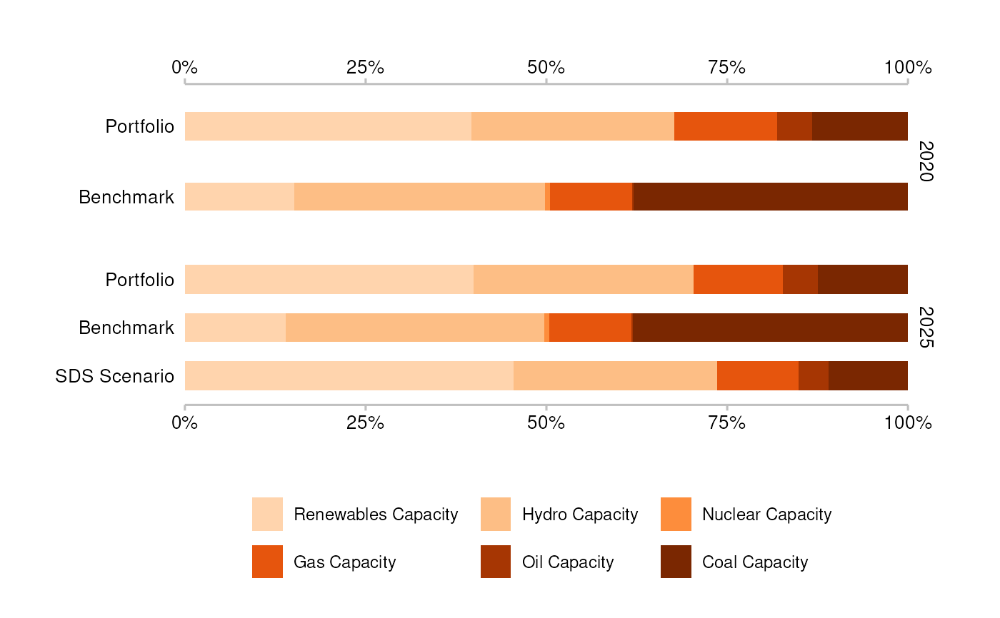

Create a techmix plot
Usage
plot_techmix(
data,
span_5yr = FALSE,
convert_label = identity,
convert_tech_label = identity
)Arguments
- data
A data frame. Requirements:
The structure must be like market_share.
The following columns must have a single value:
sector,region,scenario_source.The column
metricmust have a portfolio (e.g. "projected"), a benchmark (e.g. "corporate_economy"), and a singlescenario(e.g. "target_sds").(Optional) If present, the column
labelis used for data labels.(Optional) If present, the column
label_techis used for technology labels.
- span_5yr
Logical. Use
TRUEto restrict the time span to 5 years from the start year (the default behavior ofqplot_techmix()), or useFALSEto impose no restriction.- convert_label
A symbol. The unquoted name of a function to apply to y-axis labels. For example:
To convert labels to uppercase use
convert_label = toupper.To get the default behavior of
qplot_techmix()useconvert_label = recode_metric_techmix.
- convert_tech_label
A symbol. The unquoted name of a function to apply to technology legend labels. For example, to convert labels to uppercase use
convert_tech_label = toupper. To get the default behavior ofqplot_techmix()useconvert_tech_label = spell_out_technology.
Examples
# `data` must meet documented "Requirements"
data <- subset(
market_share,
scenario_source == "demo_2020" &
sector == "power" &
region == "global" &
metric %in% c("projected", "corporate_economy", "target_sds")
)
plot_techmix(data)
#> Warning: The `data` argument of `plot_techmix()` must be prepped already as of
#> r2dii.plot 0.4.0.
#> ℹ From the next release you will need to call `r2dii.plot::plot_techmix(data)`
#> prior to calling `r2dii.plot::plot_techmix()`.
#> ℹ Alternatively custom data preparation will also become possible.
#> The `technology_share` values are plotted for extreme years.
#> Do you want to plot different years? E.g. filter data with:`subset(data, year %in% c(2020, 2030))`.

# plot with `qplot_techmix()` parameters
plot_techmix(
data,
span_5yr = TRUE,
convert_label = recode_metric_techmix,
convert_tech_label = spell_out_technology
)
#> The `technology_share` values are plotted for extreme years.
#> Do you want to plot different years? E.g. filter data with:`subset(data, year %in% c(2020, 2030))`.